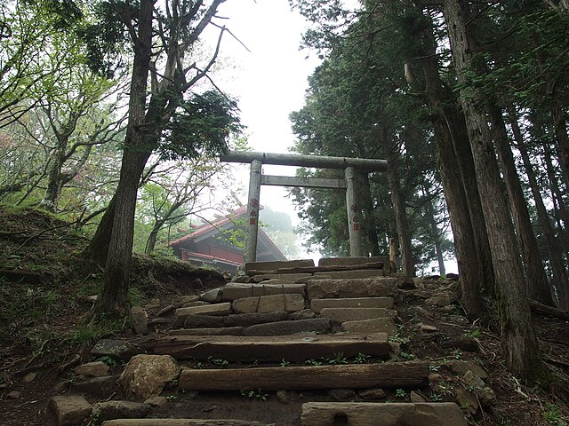
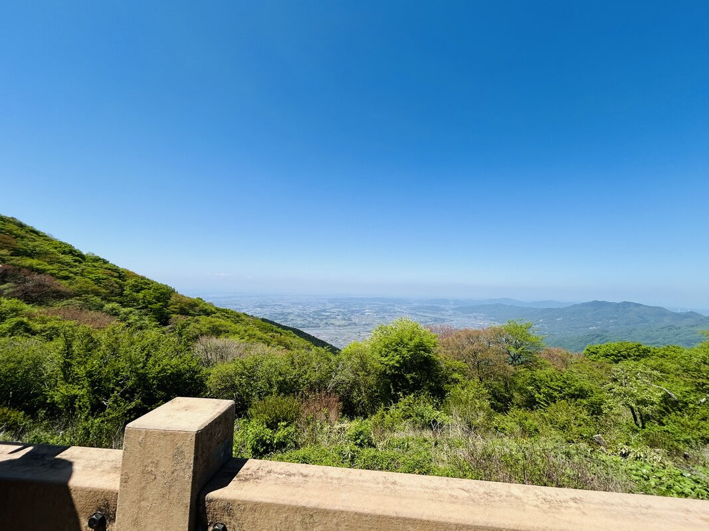
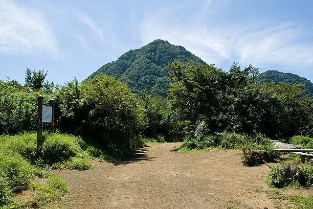

「東京から日帰りで行ける山、結局どこがいい？」
そんな人向けに、東京から3時間以内で行ける登山を5つ厳選しました。出発地からのアクセス時間も考慮して選んでいます。
そんな人向けに、東京から3時間以内で行ける登山を5つ厳選しました。出発地からのアクセス時間も考慮して選んでいます。
💡 コース定数とは
登山の総合的な負荷を数値化した指標。10〜15は初心者向け、16〜25は中級者向けの目安です。
登山の総合的な負荷を数値化した指標。10〜15は初心者向け、16〜25は中級者向けの目安です。
おすすめ5山
① 高尾山
東京都・標高599m

🚗 車新宿から約50分
🚃 電車新宿から電車約50分
コース定数8〜51※日帰り標準ルートは14前後（縦走含む場合の幅）
特徴年間300万人以上が訪れる日本有数の登山地。ケーブルカーやリフトもあり、体力に合わせたコース選びが可能。
👍 おすすめ理由：新宿から電車で50分という圧倒的なアクセスの良さ。山頂からの富士山の眺望は格別で、初心者から経験者まで楽しめます。
高尾山の詳細情報を見る →
② 大山（丹沢）
神奈川県・標高1,252m

🚗 車大船・横浜から約45〜60分
🚃 電車新宿から電車＋バス約1時間20分
コース定数12〜46
特徴丹沢山地の東端に位置する名峰。山頂からの360度の眺望が魅力で、晴れた日は東京湾まで見渡せます。
👍 おすすめ理由：ケーブルカーを利用すれば体力を温存でき、比較的短時間で山頂を目指せます。春の桜、秋の紅葉シーズンが特に人気。
大山（丹沢）の詳細情報を見る →
③ 筑波山
茨城県・標高877m

🚗 車新宿から約2時間30分
🚃 電車新宿からつくばエクスプレス＋バス約1時間30分
コース定数8〜17
特徴日本百名山の中でも最も低い山のひとつ。双耳峰（男体山・女体山）を持ち、ロープウェイも利用可能。
👍 おすすめ理由：関東平野からよく見える独立峰で、山頂からの眺望は抜群。コース定数が低めで、登山入門としても最適な一山です。
筑波山の詳細情報を見る →
④ 陣馬山
東京都・標高857m

🚗 車新宿から約1時間10分
🚃 電車新宿から電車＋バス約1時間20分
コース定数3〜81※日帰り標準ルートは15前後（縦走含む場合の幅）
特徴山頂に白馬の像が立つことで有名。奥高尾縦走のスタート地点としても人気が高く、稜線歩きが楽しめます。
👍 おすすめ理由：JR高尾駅からバスでアクセスでき、電車登山も可能。高尾山と組み合わせた縦走コースは中級者に最適です。高尾山〜陣馬山縦走コースの詳細もあわせてご覧ください。
陣馬山の詳細情報を見る →
⑤ 金時山
静岡県・標高1,212m

🚗 車新宿から約1時間20分
🚃 電車新宿から電車＋バス約1時間40分
コース定数7〜16
特徴箱根の名峰。山頂からの富士山の眺めは「金太郎富士」と称される素晴らしさ。茶屋の「金時娘のきのこ汁」が名物。
👍 おすすめ理由：新宿から箱根方面へ約1時間20分でアクセス可能。標高は1000mを超えますがコース定数は低めで、充実した眺望が得られます。
金時山の詳細情報を見る →
まとめ：条件に合った山をかんたんに見つけよう
今回紹介した5山はいずれも東京から3時間以内、日帰りで十分楽しめる山ばかりです。出発地や季節によって最適な山は変わります。さらに細かい条件で山を探したいときは、Yamatchの検索ツールが便利です。